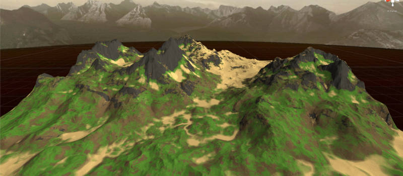
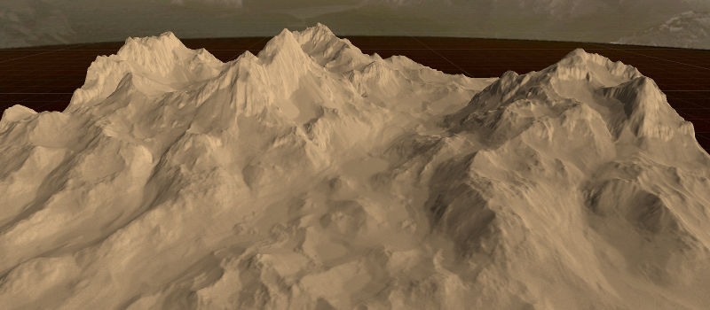
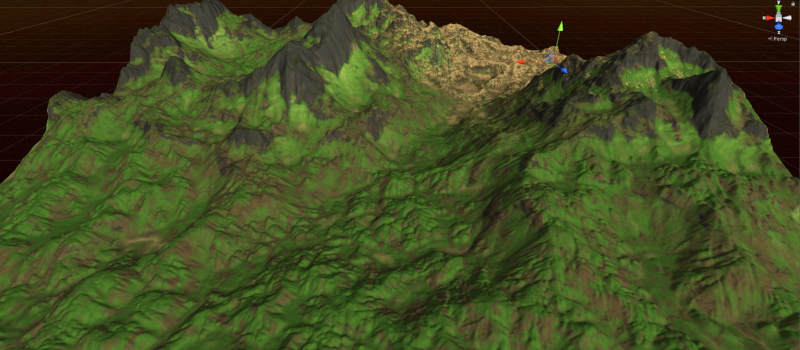
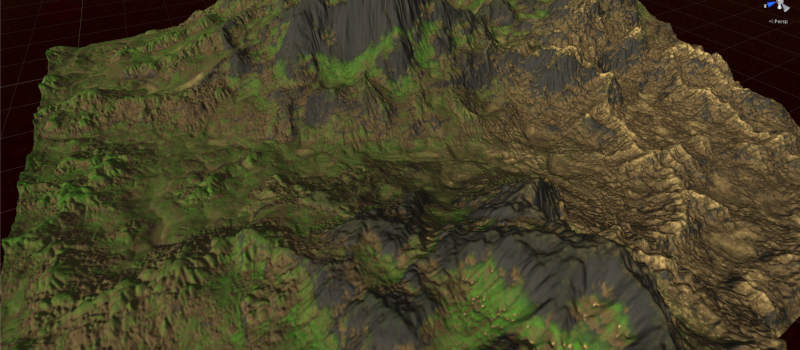

Terrain Simulation Suite
What is Terrain Simulation Suite?
It is a GPU-powered shallow water simulation used to simulate processes like erosion (thermal and hydraulic) on terrains right inside Unity.Currently being WIP, it is intended to havea both filter (immediate) as well as interactive capabilities in order to directly shape your terrain.
Internally the simulation works on 4 different terrain material layers, which allows for complex and realistic terrain simulations.
Standalone Demo
There is a very old, unoptimized standalone demo available to test out the water simulation - it does NOT include any kind of erosion yet.Some WIP screens of the erosion results:

Experimental parameters with manual interaction with the water brush.

Same terrain without material coloring for a detailed heightmap view.

Earlier parameter settings, no manual interaction.

Even earlier parameter settings and manual adjustments to rain over time.